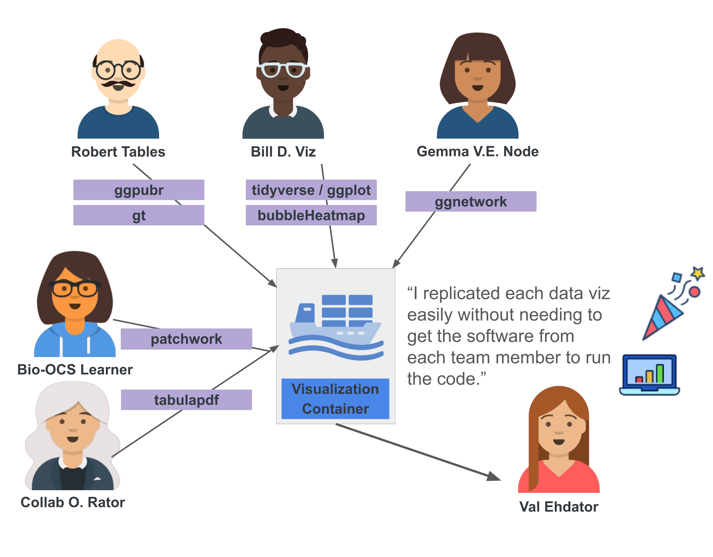

Biomedical Open Case Studies: Using containers for collaborative, reproducible research
Disclaimer
The purpose of the Open Case Studies project is to demonstrate the use of various data science methods, tools, and software in the context of messy, real-world data. A given case study does not cover all aspects of the research process, is not claiming to be the most appropriate way to analyze a given data set, and should not be used in the context of making policy or clinical decisions without external consultation from scientific experts or medical care professionals. In addition, due to size constraints, datasets used within a case study may be a subset of the original/full dataset.
License information
This work is licensed under the Creative Commons Attribution-NonCommercial 4.0 (CC BY-NC 4.0) United States License.
Funding information
This work is funded through the National Institutes of Health, specifically the National Institute of General Medical Sciences: Grant Number 1R25GM160622.
To cite this case study, please use:
Isaac, Kathryn J and Thomas, Oshane and Teichman, Sarah, and Wright, Carrie. (2026). https://github.com/opencasestudies/ocs-bio-containers/. Using containers for collaborative, reproducible research (Version v1.0.0).
GitHub repository
To access the GitHub repository for this case study see here: https://github.com/opencasestudies/ocs-bio-containers/
Keywords
- Keyword 1
- Keyword 2
- Keyword 3
- …Keyword n
Prerequisites
Prerequisites
- Learners will need to install Docker
- Learners should install Docker Desktop (optional, but suggested)
For the Advanced homework:
- Learners will need a GitHub account
Motivation
In this case study, we ask you to imagine that you are working with a collaborator on a scientific project. You receive the following email with a request to help with making some data visualizations for study revisions. The study is a collaborative project spanning several teams. Therefore, each part of the analysis has a container so that the team can easily share computing environments and support reproducibility.

In this case study, you will learn how to use a pre-existing Docker container to run an existing analysis and further adapt the container to meet your needs by adding packages to it.
Additional topics include:
- how to explore output from an analysis performed within a container
- how to mount a volume containing version controlled analysis files
- how to save results from an analysis run in a container
Container
A container is a defined packaging of code, dependencies, packages, etc. within an isolated environment supporting the deployment of applications or running of analyses.
Outline
I. What is a container? (above)
- Describe images, containers, and other vocabulary around the subject such as Dockerfile, building an image, etc.
- make a diagram showing how Dockerfile relates to building an image … (possibly borrow or adapt the crane one that Candace made for ITCR containers course)

- Why containers?
- Describe why
- Describe that a container isn’t always necessary, but more on this later…
- What are some general use cases for containers?
- Developing: starting from the beginning, setting up a base image, specifying dependencies, actual packages of interest
- Finding: search and find a container that meets your needs (you may have to modify it a bit/add a couple other packages)
- Specified: A collaborator sends you a container and you need to use it (or add a package or otherwise modify it in some way to suit your needs)
The last of these scenarios is the context for this case study.

Main Question
Our main question(s)
- How does one use containers to improve the reproducibility of their work? (Are containers always necessary?)
- How does one use a container and modify a container?
- What are microbiome and metabolome data and how can they be used together?
Learning Objectives
In this case study, we will introduce containers and describe why and how to use them to standardize computing environments for scientific analyses. We will use Docker to specify the environment used to create several data visualizations of a table describing samples within a curated data resource.
The skills, methods, and concepts that students will be familiar with by the end of this case study are:
Data Science/Bioinformatics Learning Objectives:
- {FILL IN}
- {FILL IN}
- {FILL IN}
Biological/Topical Learning Objectives:
- {FILL IN}
- {FILL IN}
- {FILL IN}
Objectives Map
NoteObjectives Map: Where It Is Covered
| Learning Goal | Applications / Practice | Location |
|---|---|---|
| Term related to a learning objective | Description of action or activity that will reinforce that LO | Data Import |
| Another term | Description of its activity | Data Wrangling |
| Another learning objective concept | Another description of this one’s activity | Data Visualization |
Packages and Setup
We will begin by loading the packages that we will need:
#add library() calls library(here) library(tabulapdf) library(tidyverse)
Package | Use
---------- |-------------
[here](https://cran.r-project.org/web/packages/here/refman/here.html){target="_blank"} | Constructs paths within project
[tabulapdf](https://cran.r-project.org/web/packages/tabulapdf/refman/tabulapdf.html){target="_blank"} | Extract data from a PDF
[tidyverse](https://cran.r-project.org/web/packages/tidyverse/refman/tidyverse.html){target="_blank"} | Data wrangling
[ggplot2](https://cran.r-project.org/web/packages/ggplot2/refman/ggplot2.html){target="_blank"} | Visualize data
[patchwork](https://cran.r-project.org/web/packages/patchwork/refman/patchwork.html){target="_blank"} | Combining multiple plots
The first time we use a function, we will use the `::` to indicate which package we are using. Unless we have overlapping function names, this is not necessary, but we will include it here to be informative about where the functions we will use come from.
`tabulapdf` is an example of a package that you may want to use a container for because of dependencies. `tabulapdf` requires Java which you may or may not have installed in your system. Though dependency needs can get much more complex.
<!--
More details on the background on the case study topic as well its relation to biomedical science.
Videos or images may be helpful so this includes an example of embedding a video.
-->
# **Context**
***
## Metabolomics
Discuss information such as ...
* why the microbiome and metabolome datasets are related/considered together
* what the study with the table we're looking at is analyzing
* what a cohort is
* what paired data means
* what longitudinal means
* what HMDB-annotated compounds are
* what KEGG-annotated compounds are
## Containers
I. When is a container useful?
* Especially if you need to move an analysis to another machine or environment like an HPC or the cloud
--> Discuss Singularity and Apptainer for HPCs in this section <br>
--> Include why Docker is not appropriate for HPCs <br>
--> Recommendations for the cloud <br>
* If a collaborative team is working on a large analysis within a workflow or in different environments
* If a collaborative team is having difficulty replicating results within the team
* If dependencies are causing nightmares
II. When is a container overkill? Do you really need a container or will session info work?
III. Where can you find a container?
... more on this within the data import section but highlight Dockerhub, Github, and someone like a collaborator sending you a container here... re point to the email
IV. How do you work with a container and run an analysis with a container?
* Terminal / Command Line
* If you only have a Dockerfile, you need to use this to build the image
* Docker Desktop
* An interactive Integrated Development Environment (IDE)
* In combination with GitHub Actions
Sometimes the process of running a container and interacting with it involves a combination of these options (because the container installs an IDE) that once you've run the container, you then develop an analysis within an IDE.
We'll primarily walk learners through using Docker Desktop though we'll likely use a tab structure to give learners the optional methods to use Terminal / Command Line. We will also provide a side quest about using a container that installs an IDE and suggest an advanced homework for the final option of combining containers with GitHub Actions.
The reason we're primarily walking learners through using Docker Desktop is because
1. It separates out images and containers which will support learners trying to learn the difference
2. Learners can create files, as well as import and export files within the files tab as opposed to mounting a volume
3. Learners can also mount a volume which is an option
4. Learners can easily see how many images and containers they have and while they are learning this can be extremely helpful so they don't tax their systems too much
5. Docker Desktop has its own documentation that we can point to
As for how we're working with data. Our options are to
1. mount a volume (directory) from our system that has data (and possibly scripts) in it.
2. `cp` files to and from the container
3. Create an analysis script within the running container and edit it within the container. Use a URL to get the data PDF from within the container and create/keep raw data and intermediates within the container that won't be shared. Finally, creating plots within the container that we'll have to save to our system.
While we will show examples of all of these, our primary interest is to work within the third option as much as possible. When we ran an event at a medical center, the devices were unable to mount data so we'd like to provide options separate from that as much as possible.
Notice that because this case study is focusing on working with containers and will be doing an example data analysis to help teach these concepts, most sections will have two parts. Within each section the subparts will be labeled as "Container" and "Revisions task".
* The data import section will focus on (A) "importing" a **container** and (B) importing the **data** from Table 1 of the paper for the revision task.
* The data exploration section will explore (A) the **Dockerfile** that the container is built from and (B) explore the **raw analysis data** that was imported prior to wrangling for the revision task.
* The data wrangling section will wrangle (A) the imported **data** making it data visualization ready for the revision task and (B) "wrangle" the **Dockerfile** to include a package that will help with our data visualization
* The data visualization section will (A) build the modified Dockerfile and run the image and setup the running container (file structure, analysis script) before (B) producing data visualizations of the data (two separate panels and then those panels combined with `patchwork`) for the revision task
* note the data visualization dealing with the container for this section could be designing a flowchart to summarize how the Dockerfile --> image --> container process goes.
* The data analysis section will (A) review the process of getting the fully modified container and describe mounting the data/analysis script to show that an external validator can repeat the process while (B) might compute some summary statistic for the revision task
## The revision task -- Extracting data from a PDF and data visualization
While this example of data only being available from a PDF (especially within an active project) is a bit unconventional, we think that it will be a tangible and somewhat accessible example for learners. Previous public health case studies highlight various data mining and import tasks such as utilizing an API, scraping data from an HTML webpage, and importing data from Excel files, Google Sheets, and even PDFs. This specific package hasn't been used in previous case studies and it offers some benefits for this specific topic
* This package has a function for reading tables from a PDF file. Several of the previously used tools do not, and the one that does is deprecated.
* This package has some dependencies (namely Java) that we are excited to highlight within the context of containers and showing a tiny bit of complexity within the Dockerfile
* Its use helps to justify to the learners why we might need a container (dependencies)
* We don't intend to spend much of the main narrative on the tool or how to use it. Some of the explanation can go into collapsible sections to reduce cognitive load so that learners can focus on containers. Basically we'll tell them that the data retrieval and wrangling of the Table from a PDF can be achieved with this code and if you want to learn more about how it works (or want an advanced exercise of generalizing the process), click on an expandable section for details.
* We can note that reducing manual steps and automating things (like data retrieval rather than manually creating a spreadsheet from visually inspecting the table) are important steps towards more reproducible analyses because they are less error prone and more transparent.
***
# **What are the data?**
***
The data comes from Table 1 in @Muller_Algavi_Borenstein_2022. Table 1 describes the curated gut microbiome-metabolome datasets that this study aggregated in order to curate a resource for the research community. This table is a 14 row 7 column table with columns showing
* the name of each dataset
* which reference in the study relates to that data
* a brief description of the cohort within that study
* the number of samples with paired fecal microbiome-metabolome data within that cohort
* whether the study contained longitudinal data
* the number of HMDB annotated compounds
* the number of KEGG annotated compounds
Each row in the table is providing data for that source dataset itself. Figure 1 in @Muller_Algavi_Borenstein_2022 provides more information on the overlap between datasets (e.g., in how many datasets were observed HMDB annotated metabolites present).
::: {.cell layout-align="center"}
::: {.cell-output-display}
{fig-align='center' fig-alt='Table 1 from Muller et al 2022. Table 1 describes the curated gut microbiome-metabolome datasets that this study collected and analyzed as part of the meta-analysis. This table is a 14 row 7 column table with columns showing the name of each dataset, which reference in the study relates to that data, a brief description of the cohort within that study, the number of samples with paired data within that cohort, whether the study utilized longitudinal data, as well as the number of HMDB annotated compounds and finally the number of KEGG annotated compounds in each study.' width=100%}
:::
:::
After using `tabulapdf` to extract the table from the PDF (see the `Data Import` section) and some basic wrangling with `tidyverse` (see the `Data Wrangling` section), we will extract a tidy dataframe with all of the columns displayed in the original table, but those boxed in purple and listed below are the most important for our visualization task (as outlined in Collab O. Rator's email).
::: {.cell layout-align="center"}
::: {.cell-output-display}
{fig-align='center' fig-alt='The dataset name, number of paired samples, whether the sample is longitudinal, the number of HMDB annotated compounds, and the number of KEGG annotated compounds are the columns that we will use in building data visualizations.' width=100%}
:::
:::
Variable | Details
---------- |-------------
**`dataset_name`** | A character/string identifying the dataset (often containing author, studied illness, and year of the study).
**`num_paired_samples`** | The number of samples within the dataset that have paired fecal microbiome-metabolome data.
**`longitudinal`** | A character/string reporting whether that dataset has longitudinal data ("Yes" or "No").
**`hmdb_annotated_compounds`** | The number of metabolites that were identified within that dataset and annotated with the Human Metabolome Database (HMDB) [@Wishart_etal_2009].
**`kegg_annotated_compounds`** | The number of metabolites that were identified within that dataset and annotated with Kyoto Encyclopedia of Genes and Genomes (KEGG) [@Kanehisa_Goto_2000; @Kanehisa_etal_2025].
***
<!--
Describe any limitations that exist in this analysis whether it be due to the data itself, methods used, nature of the topic, etc.
You can list more than 2
See the following example from a previous case study: https://www.opencasestudies.org/ocs-bp-opioid-rural-urban/#Limitations
-->
# **Limitations**
***
There are some important considerations regarding this data analysis to keep in mind:
This case study specifically uses the technology Docker to build containers and run analyses within these isolated environments, on a local machine.
*Limitations regarding containerization and the scope of this case study:*
This case study does **not** describe how to:
* develop containers from the ground up
* use containers within a workflow using tools like Nextflow or Workflow Description Language (WDL)
* use containers to support a remote analysis (e.g., in the cloud)
* use containers to deploy or support an application
* use technologies other than Docker such as Apptainer or Singularity
Docker is a widely used tool for containerization. However, it is not the most appropriate tool for all use cases and within all contexts. For example, institutional High Performance Computing (HPC) often utilizes Apptainer due to its need of fewer user privileges (e.g., greater security). As a software tool, the long-term availability of Docker is not guaranteed. Containerization and the principles discussed within this case study will remain integral to reproducible research especially for dispersed teams. However, the specific technologies used to implement these principles may change over time and within different contexts.
*Limitations regarding the data analysis and using aggregated data:*
This case study focuses on practicing best practices in using containers to support reproducible and extensible scientific analyses. To support this goal, the example analysis is a straightforward visualization of narrow scope data. There could be additional context and characteristics (e.g., quality) about the data that are not considered or visualized within this analysis.
In addition, the harmonization of aggregated data requires careful consideration to ensure that data from multiple, different sources is both compatible and comparable [@Cheng_etal_2024]. Steps involved in data harmonization include mapping related variables across datasets, adjusting scales, units, or formats for proper comparison, and reducing bias due to differences in data collection. Harmonization is not performed within this case study. Typically, meta-analyses are synthesizing summarized information rather than aggregating the underlying, raw data [@Cheng_etal_2024]. If using this curated resource to aggregate the underlying data, carefully consider what data harmonization may be appropriate [@Nan_etal_2022].
***
# **Ethical Considerations**
***
There are some important ethical considerations when working with containerization, as well as when working with clinical/health related data. Additional ethical considerations are relevant when working within a collaborative team environment and with secondary source data (data collected by others).
*Containerization and clinical/health data considerations:*
1. When defining and sharing a container image, **make sure to never include personally identifiable information (PII) or protected health information (PHI)**.
* Even if you are sharing a Dockerfile or image using a private repository or in private communication within a team setting, do not include PII or PHI.
* Data that is considered PII or PHI includes names, dates of birth, contact information, account or health plan numbers, IP addresses, and medical records. You can read more about PII and PHI and ethical data handling practices in [this course](https://hutchdatascience.org/Ethical_Data_Handling_for_Cancer_Research/data-privacy.html#pii-personal-identifiable-information) with broader information regarding proactive and ethical data management and sharing can be found in [this course](https://hutchdatascience.org/Proactive_Data_Management_and_Sharing/).
2. Container images should be minimal and non-interactive (e.g., able to install without user interaction).
* In general, do not include any data (even if it's not PHI or PII) within an image that you share (ensuring a minimal image).
* Remove unnecessary packages or dependencies (ensuring a minimal image).
* Avoid adding software like `git` that would require user credentials or authentication to install or setup (ensuring a minimal, non-interactive image).
* Do not include any credentials within the definition of a container image (ensuring a minimal, secure image).
3. Only use containers from known and verified sources.
4. While images provide a static snapshot of a computing environment, the security or health of a container isn't necessarily static and may need to be maintained over time.
5. Only use specific technology containers within the appropriate contexts (e.g., do not use Docker on an Institutional HPC unless explicitly allowed/supported by the institution).
6. Use of open-source software that is broadly accessible is a part of ensuring findable, accessible, interoperable, and reusable (FAIR) science [@Wilkinson_etal_2016; @Barker_etal_2022]. Docker is consistent with these principles because it is a partially open-source software that is free to use for individuals and small organizations. Containerization of analysis software and depositing it in repositories further aligns with these principles by making tools and analyses more accessible and transparent to others.
7. Keep comprehensive documentation for scientific projects regarding sources and handling of data as well as steps in the analysis process. Further, be transparent, sharing version-controlled records of analyses. Containerization is just a part of [reproducible science](https://hutchdatascience.org/Proactive_Data_Management_and_Sharing/defining-reproducibility.html#reproducibility-exists-on-a-continuum) [@Sandve_Nekrutenko_Taylor_Hovig_2013].
*Collaborative team considerations:*
1. For projects performed within large, collaborative teams performing transparent science can be even more of a challenge. In addition, properly crediting contributions from team members may be difficult. Large teams may also struggle to utilize resources efficiently. Containerization offers a tool for large teams to combat this efficiency struggle, ensuring that all team members can access the same computing environment in order to reproduce, validate, or extend analyses. For more details about ethical considerations for science performed in large team settings consider @Petersen_Pavlidis_Semendeferi_2014.
*Use of secondary and/or clinical/health data considerations:*
1. Use of secondary data (data collected originally by others), may need to be studied to ensure that researchers understand the variables within the data. Especially if aggregating multiple secondary sources of data, special considerations may be necessary to ensure that the data is being combined in comparable and compatible ways [@Cheng_etal_2024].
2. Use of secondary data, especially underlying clinical data (e.g., from patients or research participants) requires consideration on [how that data was collected and shared and the consent of participants](https://hutchdatascience.org/Ethical_Data_Handling_for_Cancer_Research/current-data-concerns.html).
***
::: {.content-hidden unless-meta="include-sections.data-import"}
# **Data Import**
***
## Container
Activity: access the container the collaborator shared with you (because this is how you'll be able to get the data extracted from the PDF import).
* pull the container from Docker Hub
The other option is that we can build a Dockerfile but since we'll do that in a later activity, we'd rather show pulling from Docker Hub in this example.
Side quest: find a container on Docker Hub (and discuss reputable sources)
Note that although we can see the container (specifically an image at this step)-- this doesn't give us access to the data analysis data yet. For that we must run the container.
## Revisions task
Using the `tabulapdf` package, we will extract a raw, unwrangled version of Table 1.
Walk through how to run the container in order to run the analysis and extract the data.
Side quest: what if you wanted to spin up an IDE with your container?
Activity -- Using the container from the collaborator to get the Table 1 data.
Because we want to avoid mounting data and scripts for most of this case study (and leave that as part of the Data Analysis section or a side quest), we'll use the following instructions for someone to interact with the data analysis data within a running container:
For Docker Desktop:
* run the container
* navigate to the exec tab
* set-up a file structure (motivate this by it being important to have a file structure in a data analysis, pointing to ITCR reproducibility resources):
* `mkdir opt/case_study_analysis plots/ data/imported data/wrangled`
* `touch` an `preprocessing.R` script in `opt/case_study_analysis`
* navigate to the files tab
* right click on the `preprocessing.R` script and click edit
* copy paste the following code into the script
* click save
* navigate to the exec tab
* use `Rscript preprocessing.R` -- adjusting based on script location and learner's file location.
* notice that it outputs "Dimensions: 25 x 7"
* notice that there is an rda file in the `data/imported` folder (which we can `ls data/imported` to see)
::: {.cell}
```{.r .cell-code}
#!/usr/bin/env Rscript
raw_table <- tabulapdf::extract_tables("https://www.nature.com/articles/s41522-022-00345-5.pdf",
pages = 2,
method = "stream",
col_names = FALSE
)[[1]]
message("Dimensions: ", paste(dim(raw_table), collapse = " x ")):::
save(raw_table, file = here::here("data", "imported", "raw_table1.rda")):::
Data Exploration
Container
We’ll utilize this section to explore the Dockerfile specifically answering “What’s in a container?”
FROM rocker/tidyverse:4.5.3@sha256:913d87bd9b81480b97bd4fc18e619e71d12b0a034bc80bb841830ac10278fd1a
ENV DEBIAN_FRONTEND=noninteractive
ENV JAVA_HOME=/usr/lib/jvm/java-11-openjdk-current
ENV PATH=/usr/lib/jvm/java-11-openjdk-current/bin:${PATH}
RUN apt-get update \
&& apt-get install -y --no-install-recommends \
openjdk-11-jdk \
wget \
libpng-dev \
libicu-dev \
libpcre2-dev \
libdeflate-dev \
libzstd-dev \
liblzma-dev \
libbz2-dev \
zlib1g-dev \
&& arch="$(dpkg --print-architecture)" \
&& ln -sfn "/usr/lib/jvm/java-11-openjdk-${arch}" "${JAVA_HOME}" \
&& printf 'JAVA_HOME=%s\n' "${JAVA_HOME}" >> /usr/local/lib/R/etc/Renviron.site \
&& R CMD javareconf \
&& rm -rf /var/lib/apt/lists/*
RUN install2.r --error --deps TRUE \
rJava \
tabulapdf \
here

- Notice there are layers
- Point out dependencies (Side quest: how do we know what dependencies we need?)
- The software or packages of major interest
- Keeping it modular or small and having multiple containers for the same project/different substeps (note that in this case study we’re using the data visualization container the team is using…it’ll have some visualization packages that are reasonably being used by the team for visualizations, but not the visualization steps within this case study)
We’ll also utilize this section to explore what’s not in a container! – Data! (noting that yes we’re storing some intermediate data in the container while we’re using it, but we won’t include that in a Dockerfile or an image / container we share with others)
We can even explore the file structure of the running container in Docker Desktop a bit and connect how those directories are related to what’s in the Dockerfile.
Side quest: Discuss mounting data/scripts in this section (as an alternative to editing the files in the file tab) and say that we’ll be doing that later on in the Data Analysis section (though this isn’t always possible depending on security settings on a system)
Revisions task
Explore what the extracted table looks like and what sort of wrangling we might need to do in order to visualize the data – we’ll show them what the data looks like, but not have them do this
- Note that the raw table data as extracted by
tabulapdfhas a 4th column that is all NA’s where the data from that column are appended to the end of the 3rd column - Note that there are more rows than we expect and this is because the “multiline” data in the third column is split as separate rows (where all the rest of the columns have NA)
- Note that all columns need a name/renamed
Data Wrangling
Revisions task
If you have been following along but stopped, we could load our imported data like so within our analysis script within the running container (without having to run the original extract_tables code):
load(here::here("data", "imported", "raw_table1.rda"))If you skipped the data import section click here.
KI note: We’ll need to add instructions to this about mounting or importing data if someone wants to pick up at this section.
load(here::here("data", "imported", "raw_table1.rda"))We’ll need to add this code to our analysis.R file using the same steps as before:
- navigate to the files tab
- right click on the
preprocessing.Rscript and click edit - copy paste the following code into the script
- click save
- navigate to the exec tab
- use
preprocessing.R– adjusting based on script location and learner’s file location.
library(tidyverse)
table1_extract <- raw_table %>%
1 mutate(num_paired_samples = as.numeric(str_extract(X3,
"\\d+$"))) %>%
2 mutate(X3Text = str_remove(X3,
"\\d+$")) %>%
3 mutate(cohort_description = if_else(lead(is.na(X1), default = FALSE),
4 paste0(X3Text,
lead(X3Text)),
5 X3Text)
) %>%
6 filter(!is.na(X1)) %>%
7 select(!c(X3, X4, X3Text)) %>%
8 rename(c("dataset_name" = "X1",
"ref" = "X2",
"longitudinal" = "X5",
"hmdb_annotated_compounds" = "X6",
"kegg_annotated_compounds" = "X7"))- 1
- Extracting the numbers (which represent the number of paired samples) at the end of the row to put them in their own column
- 2
- Making a version of the text column that has those numbers of paired samples removed
- 3
-
Setting up an if else that evaluates whether the next value/row in the dataset name column is an NA value. This utilizes the
leadfunction to look for the next value. In the case of the last row, we’re using thedefaultargument to pad the data with aFALSE - 4
-
If the
leadfunction returns that the next value is NA (TRUE), it will paste the current cohort text with the next row’s text - 5
-
Otherwise if the
leadfunction returns that the next value is not NA (FALSE) (or is the last value/row), it will return the current cohort text only. - 6
- This filters to remove the rows where the dataset name is NA because we’ve already appended the important information from those rows
- 7
- This removes the original X3 column (that had the cohort description plus number of paired samples), the X4 column which was all NAs, and the X3Text column which has incomplete cohort descriptions
- 8
- Rename the columns so they are descriptive
Advanced side quest: Can challenge learners to come up with a more generalizable way to wrangle the data if there’s more than one NA row that needs to be collapsed (e.g., some data has more than 2 lines) (use a dropdown section for this)
As a way to spot check that the container is doing something up to this point, we can use some outputs
message(table1_extract[4, "dataset_name"])
message("Dimensions: ", paste(dim(table1_extract), collapse = " x "))The Dimensions will have fewer rows (14 instead of 25) and the value of the dataset name should be HE_INFANTS_MFGM_2019
To allow users to skip import and wrangling we will save the data as an RDA file as well as a CSV file as this is often useful to send our data to collaborators. We will save this in a “wrangled” subdirectory of our “data” directory of our working directory.
- 1
- saving the data as an RDA file within the wrangled data subdirectory
- 2
- saving the data as a CSV file within the wrangled data subdirectory
Now that we’ve wrangled the extracted table data into a dataframe, we want to plan out the visualizations we’ll make using this dataframe!
We want to make two scatter plots:
- labeling the points with the
dataset_name - coloring the points based on
longitudinalvalue - y-axis
hmdb_annotated_compoundsfor one plotkegg_annotated_compoundsfor the other plot
- x-axis is
num_paired_samples
But if we make two separate scatter plots, they will be two separate panels/files that won’t be displayed next to each other unless we use design software like illustrator. But we could also use a package that allows us to combine plots, then the scatter plot will have two panels displayed next to each other. So let’s “wrangle” the Dockerfile to include a package that will let us do that: patchwork.
Container
As you can see from the visualization step above, these two panels are completely separate separate plots – and we’d like them to be visible next to each other…. we can use patchwork for that, but we’ll need to add patchwork to our visualization container….
Activity: Add patchwork to the container
- edit the Dockerfile (in your favorite text editor)
- build the Dockerfile to be an image (will need to do this on terminal)
Data Visualization
If you have been following along but stopped, we could load our wrangled data like so within the analysis script. We’d comment out the data import and wrangling steps and use this instead:
load(here::here("data", "wrangled", "wrangled_data.rda"))Even if you stop the container (as long as you don’t delete it), you can restart it and the data will still be there as long as it was saved during wrangling
If you skipped the data import section click here.
KI note: for this section we’ll have walk people through how to import the data into the container (or mount a volume)
We’ll use this section to make two scatter plots. And then combine the plots with patchwork, specifically using the modified container to run the code
- run the newly modified and built image
- navigate to the exec tab
- set-up a file structure (motivate this by it being important to have a file structure in a data analysis, pointing to ITCR reproducibility resources):
mkdir opt/case_study_analysis plots/ data/imported data/wrangled
touchananalysis.Rscript inopt/case_study_analysis
Add the following code from the code blocks to the running container as well, repeating the steps * navigate to the files tab * right click on the analysis.R script and click edit * copy paste the following code into the script (we’ll describe how to import the wrangled data or provide all the earlier code for the script as well) * click save * navigate to the exec tab * use Rscript analysis.R – adjusting based on script location and learner’s file location.
hmdb_scatter <- table1_extract %>%
mutate(longitudinal = factor(longitudinal, levels = c("No", "Yes"))) %>%
ggplot(aes(x = num_paired_samples,
y = hmdb_annotated_compounds,
color = longitudinal,
label = dataset_name)) +
geom_point(size = 2.5) +
geom_text(vjust = -0.5, size = 2.8, color = "black") +
scale_color_manual(values = c("No" = "#D27D2D",
"Yes" = "#1D6F8A"), drop = FALSE) +
labs(title = "Paired sample count vs HMDB annotation coverage",
x = "No. samples with paired data",
y = "HMDB Annotated compounds",
color = "Longitudinal") +
theme_minimal(base_size = 12) +
coord_fixed(ratio = 1)
ggsave(here::here("plots/hmdb_scatter.png"))
kegg_scatter <- table1_extract %>%
mutate(longitudinal = factor(longitudinal, levels = c("No", "Yes"))) %>%
ggplot(aes(x = num_paired_samples,
y = kegg_annotated_compounds,
color = longitudinal,
label = dataset_name)) +
geom_point(size = 2.5) +
geom_text(vjust = -0.5, size = 2.8, color = "black") +
scale_color_manual(values = c("No" = "#D27D2D",
"Yes" = "#1D6F8A"), drop = FALSE) +
labs(title = "Paired sample count vs KEGG annotation coverage",
x = "No. samples with paired data",
y = "KEGG Annotated compounds",
color = "Longitudinal") +
theme_minimal(base_size = 12) +
coord_fixed(ratio = 1)
ggsave(here::here("plots/kegg_scatter.png"))
We can use ls plots/ to see that these png files exist. Though we’ll have to use the file explorer to save any of those files to our system. Is there an easy way besides basing an image off of an IDE like VSCode or RStudio?
Use the following steps to edit the analysis and include this visualization too
- navigate to the files tab
- right click on the
analysis.Rscript and click edit - copy paste the following code into the script
- click save
- navigate to the exec tab
- use
Rscript analysis.R– adjusting based on script location and learner’s file location.
- 1
- Use the HMDB scatter plot from before, but remove its title
- 2
- Use the KEGG scatter plot from before, but remove its title
- 3
- Combine the legends
- 4
- Add a single title for the whole plot
We can again use ls plots/ to see the new png file that was saved. The logs should also say something about saving the file

patchwork is a very useful package for combining plots. In this use case it isn’t strictly necessary because we could use pivot_longer to wrangle the data and facet_wrap to split out the scatter plots for the different annotations. We chose to use patchwork in this case for illustrative purposes on adding a package to a container in an approachable example.
Data Analysis
Question opportunity
Pose a question about the data analysis.
Answer
You can use a collapsible details section to provide an answerWe might use a column margin note to add an equation or some other annotation for learners or educators.
In this section we can discuss that someone else (maybe the person validating the work for resubmission) can use the container to run the analysis and get the exact same results and plot that you made because of the container. Specifically, what should you share with someone so they can rerun the analysis?

- Plan to have another image on Docker Hub with the patchwork package
- Have a
preprocessing.Rscript that grabs and wrangles the data - Have an
analysis.Rscript with all the visualization steps together - Have an
run_analysis.shscript that makes the directories and drives the preprocessing and analysis
We’ll also discuss how to mount a volume (with data and/or analysis script) and show that the validator can get the same results by having the learner run the run_analysis.sh script.
To make it easier to validate/compare instead of comparing plots (that will be difficult to compare especially since we seem to have to save plots out of the container to view them), we could add a summary stat that can be output in the logs.
Summary
Synopsis
So if you do need to use a container:
- It’s going to be hard
- Your needs may be beyond what’s covered in this resource … look at additional information for more resources
But maybe you don’t need a container … include some sort of flowchart with recommendations on when you would use a container vs just using session information or something like that
Highlight what we did and summarize what we learned
Summary Plot
Put another flowchart that shows the process of using a container and how it related to the analysis (extracting the data and making a plot)
Main Questions Revisited
NoteMain Questions Revisited: What Did We Learn
| Question | Current answer | Caveat |
|---|---|---|
| Reiteration or restatement of main question | Describe the answer based on case study activities | List any important caveats potentially connecting to earlier limitations |
| Another main question | Description of its activity | Caveats for this Q & A |
| Another of the main questions | Another description of this one’s activity | Q & A specific caveats |
Continued Learning
Common Next Steps
Discuss common next steps for this type of an analysis in this box. Is there a specific number of steps that you need to do before a specific step? Is a “next step” more of an alternate step?
Reinforcement Exercises
Point out that text labels are overlapping each other in the right panel, and clipped on axis limits for both panels. The ggrepel package can be useful in fixing these problems.
- Add
ggrepelto the Dockerfile- build the Dockerfile
- run the image
- extract and wrangle the data with the
preprocessing.Rscript or mount the wrangled data when running the image - update the
analysis.Rscript to utilizeggrepelwithin the scatter plots made withpatchwork - and rerun the analysis with the modified container

Advancement Exercises
Use this section to suggest different levels of exercises that build upon topics from the case study … next steps, tangential skills, diving deeper into a side quest, etc.
Perhaps explain how the suggested exercises relate to the common next steps.
Beginner
Intermediate
Advanced
Use a container together with GitHub actions to extract the PDF data and make the visualization.
Additional Information
We’ll include information in this section about
- Security
- Versioning
- Sizes and not overburdening your system
Helpful Links
- ITCR Containers course
- other resources
Terms and concepts covered:
Packages used in this case study:
Glossary
| Term | Definition |
|---|---|
| Term 1 | Definition of Term 1 |
| Term2 | Definition of Term 2 |
References
Session Info
devtools::session_info()─ Session info ───────────────────────────────────────────────────────────────
setting value
version R version 4.3.2 (2023-10-31)
os Ubuntu 22.04.4 LTS
system x86_64, linux-gnu
ui X11
language (EN)
collate en_US.UTF-8
ctype en_US.UTF-8
tz Etc/UTC
date 2026-08-05
pandoc 3.1.1 @ /usr/local/bin/ (via rmarkdown)
─ Packages ───────────────────────────────────────────────────────────────────
package * version date (UTC) lib source
cachem 1.0.8 2023-05-01 [1] RSPM (R 4.3.0)
chromote 0.5.1 2025-04-24 [1] CRAN (R 4.3.2)
cli 3.6.5 2025-04-23 [1] CRAN (R 4.3.2)
curl 7.0.0 2025-08-19 [1] CRAN (R 4.3.2)
devtools 2.4.5 2022-10-11 [1] RSPM (R 4.3.0)
digest 0.6.34 2024-01-11 [1] RSPM (R 4.3.0)
dplyr 1.1.4 2023-11-17 [1] RSPM (R 4.3.0)
ellipsis 0.3.2 2021-04-29 [1] RSPM (R 4.3.0)
evaluate 1.0.5 2025-08-27 [1] CRAN (R 4.3.2)
fansi 1.0.6 2023-12-08 [1] RSPM (R 4.3.0)
fastmap 1.1.1 2023-02-24 [1] RSPM (R 4.3.0)
fs 1.6.3 2023-07-20 [1] RSPM (R 4.3.0)
generics 0.1.3 2022-07-05 [1] RSPM (R 4.3.0)
gitcreds 0.1.2 2022-09-08 [1] RSPM (R 4.3.0)
glue 1.7.0 2024-01-09 [1] RSPM (R 4.3.0)
hms 1.1.3 2023-03-21 [1] RSPM (R 4.3.0)
htmltools 0.5.7 2023-11-03 [1] RSPM (R 4.3.0)
htmlwidgets 1.6.4 2023-12-06 [1] RSPM (R 4.3.0)
httpuv 1.6.14 2024-01-26 [1] RSPM (R 4.3.0)
httr 1.4.7 2023-08-15 [1] RSPM (R 4.3.0)
jsonlite 2.0.0 2025-03-27 [1] CRAN (R 4.3.2)
knitr 1.50 2025-03-16 [1] CRAN (R 4.3.2)
later 1.3.2 2023-12-06 [1] RSPM (R 4.3.0)
lifecycle 1.0.4 2023-11-07 [1] RSPM (R 4.3.0)
magrittr 2.0.3 2022-03-30 [1] RSPM (R 4.3.0)
memoise 2.0.1 2021-11-26 [1] RSPM (R 4.3.0)
mime 0.12 2021-09-28 [1] RSPM (R 4.3.0)
miniUI 0.1.1.1 2018-05-18 [1] RSPM (R 4.3.0)
ottrpal 2.0.0 2025-12-16 [1] Github (ottrproject/ottrpal@6d1267e)
pillar 1.9.0 2023-03-22 [1] RSPM (R 4.3.0)
pkgbuild 1.4.3 2023-12-10 [1] RSPM (R 4.3.0)
pkgconfig 2.0.3 2019-09-22 [1] RSPM (R 4.3.0)
pkgload 1.4.1 2025-09-23 [1] CRAN (R 4.3.2)
png 0.1-8 2022-11-29 [1] CRAN (R 4.3.2)
processx 3.8.6 2025-02-21 [1] CRAN (R 4.3.2)
profvis 0.3.8 2023-05-02 [1] RSPM (R 4.3.0)
promises 1.2.1 2023-08-10 [1] RSPM (R 4.3.0)
ps 1.9.1 2025-04-12 [1] CRAN (R 4.3.2)
purrr 1.0.2 2023-08-10 [1] RSPM (R 4.3.0)
R6 2.6.1 2025-02-15 [1] CRAN (R 4.3.2)
Rcpp 1.0.12 2024-01-09 [1] RSPM (R 4.3.0)
readr 2.1.5 2024-01-10 [1] RSPM (R 4.3.0)
remotes 2.4.2.1 2023-07-18 [1] RSPM (R 4.3.0)
rlang 1.1.6 2025-04-11 [1] CRAN (R 4.3.2)
rmarkdown 2.25 2023-09-18 [1] RSPM (R 4.3.0)
rprojroot 2.1.1 2025-08-26 [1] CRAN (R 4.3.2)
rvest 1.0.5 2025-08-29 [1] CRAN (R 4.3.2)
sessioninfo 1.2.2 2021-12-06 [1] RSPM (R 4.3.0)
shiny 1.8.0 2023-11-17 [1] RSPM (R 4.3.0)
spelling 2.3.2 2025-08-18 [1] CRAN (R 4.3.2)
stringi 1.8.3 2023-12-11 [1] RSPM (R 4.3.0)
stringr 1.5.1 2023-11-14 [1] RSPM (R 4.3.0)
tibble 3.3.0 2025-06-08 [1] CRAN (R 4.3.2)
tidyr 1.3.1 2024-01-24 [1] RSPM (R 4.3.0)
tidyselect 1.2.0 2022-10-10 [1] RSPM (R 4.3.0)
tzdb 0.4.0 2023-05-12 [1] RSPM (R 4.3.0)
urlchecker 1.0.1 2021-11-30 [1] RSPM (R 4.3.0)
usethis 2.2.3 2024-02-19 [1] RSPM (R 4.3.0)
utf8 1.2.4 2023-10-22 [1] RSPM (R 4.3.0)
vctrs 0.6.5 2023-12-01 [1] RSPM (R 4.3.0)
webshot2 0.1.2 2025-04-23 [1] CRAN (R 4.3.2)
websocket 1.4.4 2025-04-10 [1] CRAN (R 4.3.2)
xfun 0.55 2025-12-16 [1] CRAN (R 4.3.2)
xml2 1.5.1 2025-12-01 [1] CRAN (R 4.3.2)
xtable 1.8-4 2019-04-21 [1] RSPM (R 4.3.0)
yaml * 2.3.12 2025-12-10 [1] CRAN (R 4.3.2)
[1] /usr/local/lib/R/site-library
[2] /usr/local/lib/R/library
──────────────────────────────────────────────────────────────────────────────Acknowledgments
We would also like to acknowledge the National Institute of General Medical Sciences for funding this work (1R25GM160622).
Icons are from iconpacks.